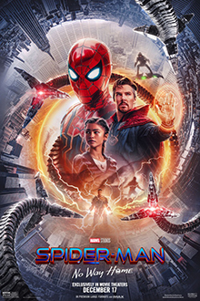
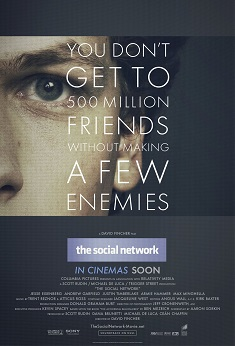
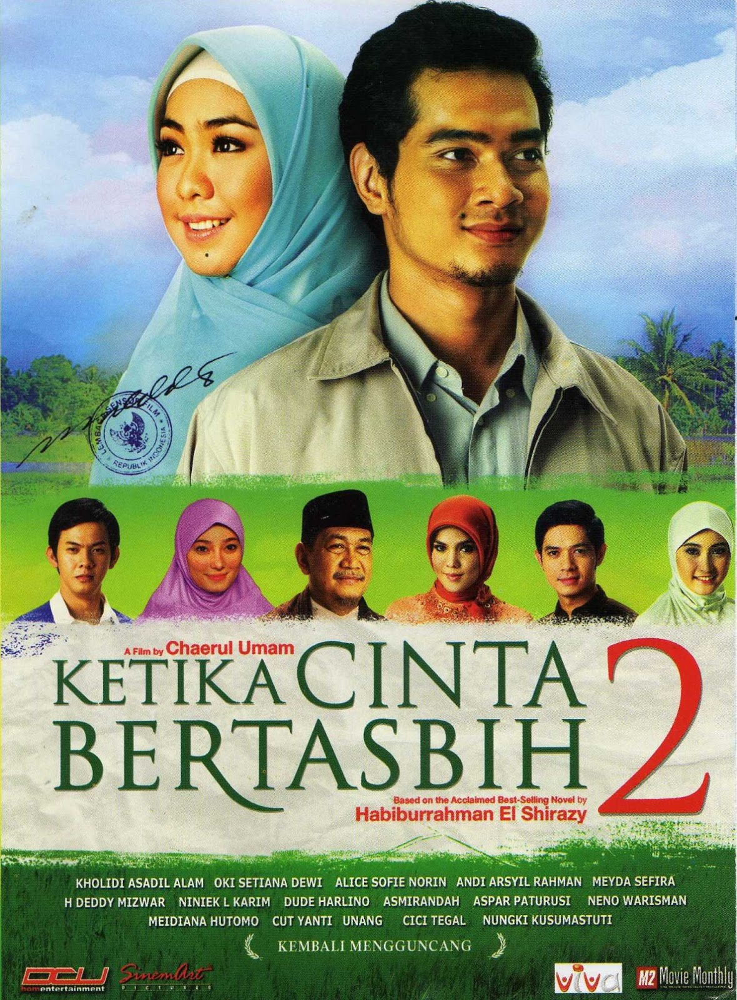
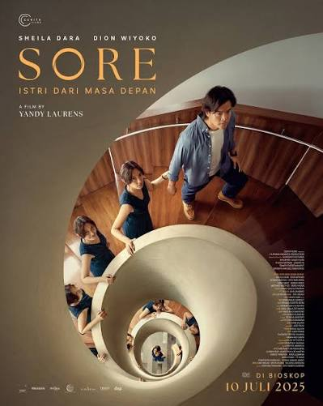

Daftar Film yang Pernah Ditonton
| Judul | Tahun | Sutradara | Rating Saya |
|---|---|---|---|
| Spider-Man: No Way Home | 2021 | Jon Watts | 9.2 / 10 |
| Habibie & Ainun | 2012 | Faozan Rizal | 8.9 / 10 |
| The Social Network | 2010 | David Fincher | 9.0 / 10 |
| Ketika Cinta Bertasbih | 2009 | Chaerul Umam | 8.7 / 10 |
| Sore: Istri dari Masa Depan | 2017 | Yandy Laurens | 8.8 / 10 |




